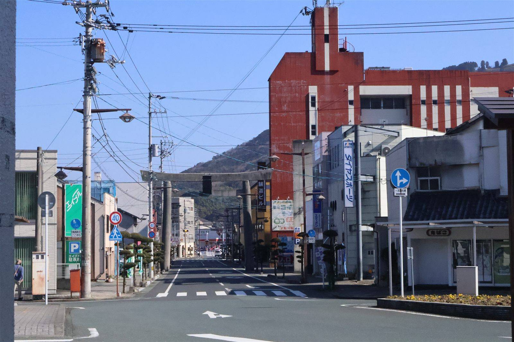

2026/07/28 ・ 大洲のいま ・ 出典: OZU NEWS2025年10月号（情報源日付: 2025/10）
空き家を使ったアート実験。台湾とつながる「OZU ARTS and CRAFTS」

出典・参考にした資料
OZU NEWS 2025年10月号（大洲市観光まちづくり戦略会議）「OZU NEWS」2025年10月号の特集が「OZU ARTS and CRAFTS 2025 +TAIWAN」だった。 9/30〜10/10の期間、大洲と台湾がつながるアートイベントが開催されたらしい。
星濱山共創工作室主催のワークショップには、大洲高校商業科3年生26人が参加。まちづくりを テーマにしたワークショップの他、地域住民12人が参加して「空き家活用のアイデアを可視化」 するワークショップも実施されたとのこと。
地域事業者21名とアーティストの交流会も「はたご屋霧中」で開かれたそうで、若い世代・地域住民・アーティストが 一緒に混ざっている感じが伝わってきた。
同じ号では、キタ・マネジメントが「POTLUCK AWARD 2025」の最終審査会（東京・ミッドタウン 八重洲）に、100件超の応募の中からファイナリストとして参加したことも紹介されていた。
受賞はできなかったものの、全国に取組みを知ってもらう機会にはなったらしい。愛知県での 国内最大級のインバウンド商談会にも参加していて、地道な営業活動が続いている印象。
築100年の古民家を活用した新しいカフェ「古民家 柊」が肱南地区にオープン予定という 話や、3年間活動した地域おこし協力隊の松井和矢さんが「大洲ガチャ」という手作りお土産を 企画していたエピソードも良かった。
派手なニュースじゃないけど、こういう積み重ねが大洲の「今」なんだろうなと思う。